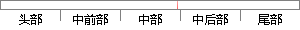

在进行声纹识别时，将输入系统的识别语音特征参数和已有的说话人识别模型进行相似比对分析，然后根据对比分析结果对待识别的说话人身份做出相应的判断。
片段位置图

相似结果|
相似片段 1：系统的识别语音特征参数和已有的说话人识别模型进行相似性比对分析，然后根据比对分析结果对待识别的说话人的身份做出相应的判断。由此可见，说话人识别模型的建立与特征参数提取一样重要，它也是说话人识别技术
相似片段 2：训练和测试都需要较长的语音和音素内容丰富的文本。与文本无关的说话人识别的基本流程为：(1)对输入的语音信号进行预处理；(2)提取所需特征参数；(3)将所提取的特征参数与已有的说话人识别模型进行相似性评估，然后根据评估结果对待识别说话人的身份作相应判断。
相似片段 3：相应的说话人识别模型。在进行说话人识别的时候，对输入的待识别说话人的语音特征参数和已有的说话人识别模型进行相似性评估，然后根据评估结果对待识别说话人的身份作相应判断。由此可见，说话人识别可分为说话人辨认
|
※ 片段修改建议 ※
近似词参考：- 进行：举行
- 系统：体系
- 识别：辨认
- 说话：措辞 语言
- 识别：辨认
- 模型：模子
- 进行：举行
- 相似：类似
- 分析：阐发 阐明 剖析
- 根据：按照 凭据 依据
- 对比：对照 比较 比拟
- 分析：阐发 阐明 剖析
- 结果：成果 成绩 成效 后果 了局 效果
- 对待：看待
- 识别：辨认
- 别的：此外 另外 其它 其余
- 说话：措辞 语言
- 相应：响应
- 判断：判定 果断
系统自动生成语句：在举行声纹辨认时，将输入体系的辨认语音特征参数和已有的措辞人辨认模子举行类似比对阐发，然后按照对照阐发成果看待辨认的措辞人身份做出响应的判定。
注：本片段修改建议为系统自动生成，仅供参考。